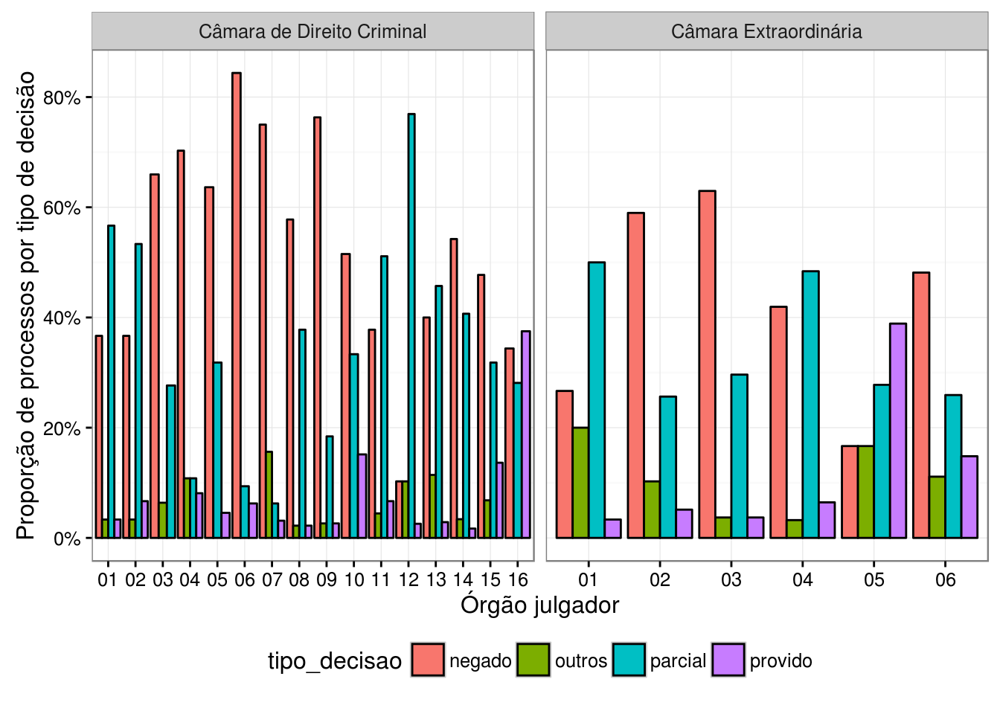

2.13 Exemplo visualização
No exemplo das câmaras, vamos fazer três gráficos. O primeiro mostra a proporção de processos por assunto em cada câmara.
d_cjsg %>%
separate(classe_assunto, c('classe', 'assunto'), sep = ' / ',
extra = 'merge', fill = 'right') %>%
group_by(assunto) %>%
mutate(n_assunto = n()) %>%
ungroup() %>%
mutate(assunto = ifelse(n_assunto < 5000, 'Outro', assunto)) %>%
count(orgao_julgador, assunto) %>%
mutate(ntot = sum(n), prop = n / ntot) %>%
ungroup %>%
filter(ntot > 1000) %>%
mutate(num = extract_numeric(orgao_julgador),
num = sprintf('%02d', num)) %>%
mutate(extra = str_detect(orgao_julgador, 'Extra'),
extra = ifelse(extra, 'Câmara Extraordinária',
'Câmara de Direito Criminal')) %>%
ggplot(aes(x = num, fill = assunto, y = prop)) +
geom_bar(stat = 'identity', colour = 'black') +
facet_wrap(~extra, scales = 'free_x') +
theme_bw() +
scale_y_continuous(labels = scales::percent) +
xlab('Órgão julgador') +
ylab('Proporção de processos por assunto') +
theme(legend.position = "bottom")
O segundo mostra a proporção de decisões favoráveis no tempo.
partes_apelacoes <- d_partes %>%
filter(tipo == 'apelado', str_detect(nome, '[Mm]inist')) %>%
mutate(n_processo = str_replace_all(arq, '[^0-9]', '')) %>%
select(n_processo)
decisoes <- d_decisoes %>%
mutate(n_processo = str_replace_all(arq, '[^0-9]', '')) %>%
inner_join(partes_apelacoes, 'n_processo') %>%
filter(situacao == 'Julgado') %>%
distinct(n_processo, decisao) %>%
mutate(tipo_decisao = tipos_decisao(decisao)) %>%
select(n_processo, tipo_decisao)
aux <- d_cjsg %>%
mutate(n_processo = str_replace_all(n_processo, '[^0-9]', '')) %>%
inner_join(decisoes, 'n_processo') %>%
arrange(desc(dmy(data_julgamento))) %>%
distinct(n_processo, .keep_all = TRUE) %>%
mutate(data = dmy(data_julgamento)) %>%
mutate(ano_mes = floor_date(data, 'month'))
aux %>%
count(ano_mes, tipo_decisao) %>%
mutate(prop = n/sum(n)) %>%
ungroup %>%
ggplot(aes(x = ano_mes, y = prop, colour = tipo_decisao)) +
geom_line() +
geom_text(aes(y = 0.65, label = n, colour = NULL),
data = count(aux, ano_mes)) +
scale_x_date(breaks = scales::date_breaks('1 month'),
labels = scales::date_format("%b")) +
scale_y_continuous(labels = scales::percent) +
xlab('Tempo (meses)') +
ylab('Proporção de cada tipo de decisão') +
theme_bw()
O terceiro mostra a proporção de cada tipo de decisão em cada câmara.
d_cjsg %>%
mutate(n_processo = str_replace_all(n_processo, '[^0-9]', '')) %>%
inner_join(decisoes, 'n_processo') %>%
count(orgao_julgador, tipo_decisao) %>%
mutate(ntot = sum(n), prop = n / ntot) %>%
ungroup() %>%
filter(ntot > 10) %>%
mutate(num = extract_numeric(orgao_julgador),
num = sprintf('%02d', num)) %>%
mutate(extra = str_detect(orgao_julgador, 'Extra'),
extra = ifelse(extra, 'Câmara Extraordinária',
'Câmara de Direito Criminal')) %>%
ggplot(aes(x = num, fill = tipo_decisao, y = prop)) +
geom_bar(stat = 'identity', colour = 'black', position = 'dodge') +
facet_wrap(~extra, scales = 'free_x') +
theme_bw() +
scale_y_continuous(labels = scales::percent) +
xlab('Órgão julgador') +
ylab('Proporção de processos por tipo de decisão') +
theme(legend.position = "bottom")